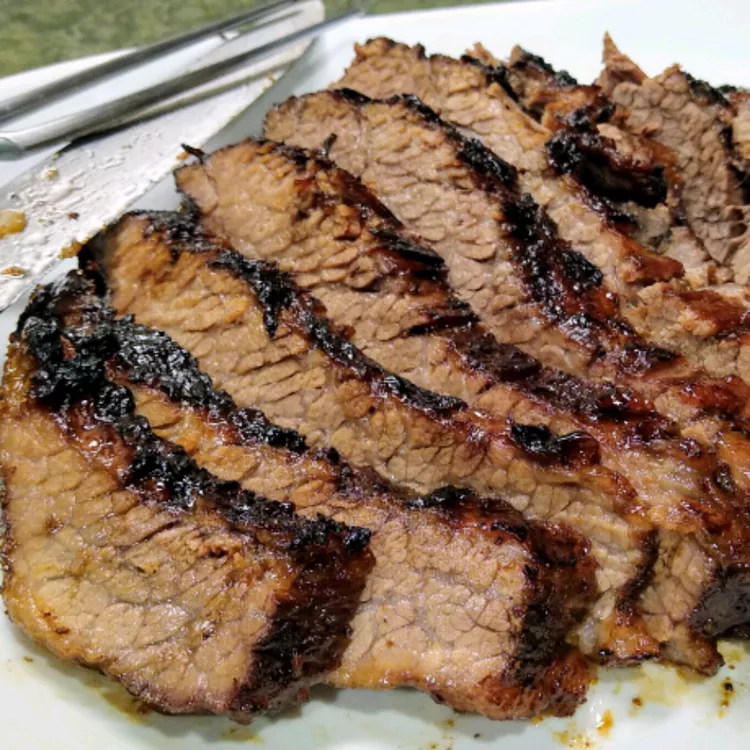

Oklahoma Brisket

Description
This is absolutely fabulous and so easy. Brisket that isn't dried out can be so good.
The bar-b-que sauce is also wonderful and can be used for other meat dishes.
Ingredients
- 1/2 cup honey
- 3 tablespoons soy sauce
- seasoned salt to taste
- 1 5 lbs beef brisket
- 1 cup apple cider
- 3/4 cup ketchup
- 1/4 cup packed brown sugar
- 2 tablespoons Worcestershire sauce
- 1/4 cup apple cider vinegar
- 1/2 teaspoon garlic powder
Directions
- Preheat oven to 300 degrees Fahrenheit. Season the brisket all over with seasoned salt, and place in a roasting pan. Pour the apple juice over it, and cover tightly with aluminum foil.
- Roast the brisket for 3 hours in the preheated oven. Don't peak.
- Prepare a grill for low heat. In a small bowl, stir together the honey and soy sauce, and season with season salt.
- When the roast comes out of the oven, Place it on the preheated grill. Grill for 30 minutes, turning frequently and basting with honey sauce.
- Meanwhile , in a saucepan over low heat, make a bar-b-que sauce with the ketchup, brown sugar, Worcestershire sauce, cider vinegar, seasoned salt, and garlic powder. Cook and stir over low heat for 15 minutes without allowing the sauce to boil. If you boil sauce, it becomes very vinegary.
- Let the brisket rest for about 10 minutes after it comes off the grill. Slice and serve with the bar-b-que sauce.